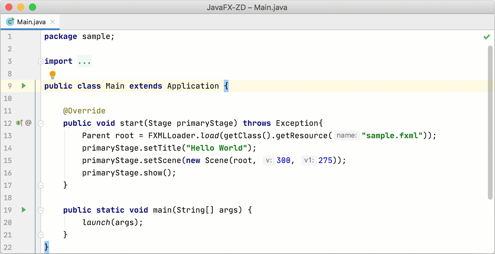
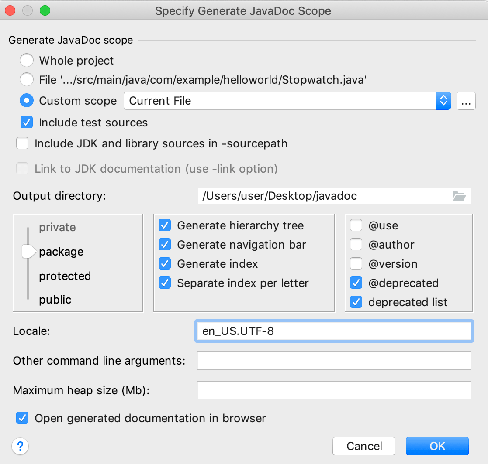
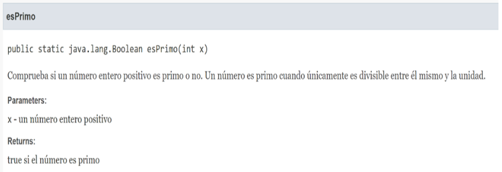
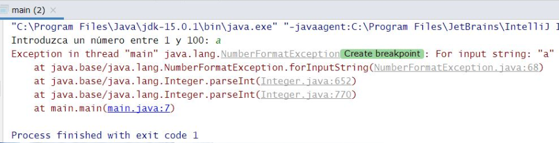
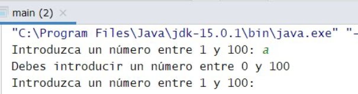
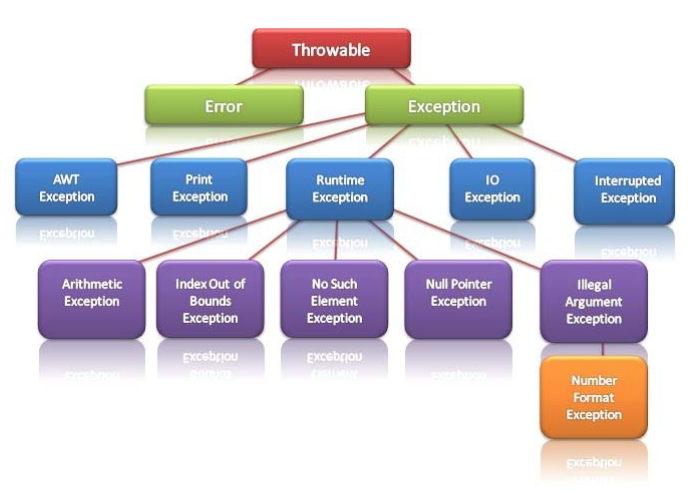
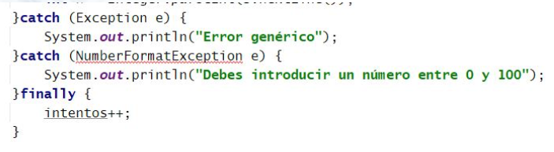
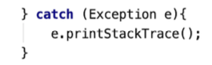

Programación
Tema 4: Funciones, aleatorios y excepciones
Índice
- Funciones
- Números aleatorios
- Excepciones
Funciones
Fragmento de código que realiza una tarea muy concreta y que se puede incluir en cualquier programa cuando hace falta resolver esa tarea.
Opcionalmente aceptan una entrada (parámetros) y devuelven una salida.
Funciones
Buena documentación mediante comentarios Javadoc:
- /**: Inicio comentario Javadoc
- @author: Autor de la función
- @param: Parámetros de la función
- @return: Lo que devuelve la función
Funciones
Declaración
/**
* Comprueba si un número entero positivo es primo o no.
* Un número es primo cuando únicamente es divisible entre * él mismo y la unidad.
*
* @author Thomas A. Anderson
* @param x un número entero positivo
* @return true si el número es primo
* @return false en caso contrario
*/
public static boolean esPrimo(int x) {
for (int i = 2; i < x; i++) {
if ((x % i) == 0) {
return false;
}
}
return true;
}
Funciones
Llamada
public static void main(String[] args) {
Scanner s = new Scanner(System.in);
System.out.print("Bienvenido, introduzca un número: ");
int num1 = Integer.parseInt(s.nextLine());
if (esPrimo(num1)) System.out.println("El número 1 es primo");
else System.out.println("El número 1 no es primo");
System.out.print("Introduzca otro número: ");
int num2 = Integer.parseInt(s.nextLine());
if (esPrimo(num2)) System.out.println("El número 2 es primo");
else System.out.println("El número 2 no es primo");
}
Funciones
Comentarios Javadoc automáticos en IntelliJ

Funciones
Tools > Generate JavaDoc

Funciones
Ejemplo de documentación generada con Javadoc

Funciones
Ámbito de las variables
Una variable actúa dentro de su ámbito o bloque donde está definida.
Dos variables con el mismo nombre, definidas dentro y fuera de la función serán dos variables distintas.
Funciones
Ámbito de las variables
public static void main(String[] args) {
Scanner s = new Scanner(System.in);
System.out.print("Bienvenido, introduzca un número: ");
int i = Integer.parseInt(s.nextLine());
if (esPrimo(i)) System.out.println("El número 1 es primo");
else System.out.println("El número 1 no es primo");
System.out.print("Introduzca otro número: ");
int x = Integer.parseInt(s.nextLine());
if (esPrimo(x)) System.out.println("El número 2 es primo");
else System.out.println("El número 2 no es primo");
}
public static boolean esPrimo(int x) {
for (int i = 2; i < x; i++) {
if ((x % i) == 0) {
return false;
}
}
return true;
}
Funciones
Ejercicios del 1 al 7
Índice
- Funciones
- Números aleatorios
- Excepciones
Números aleatorios
Se utilizan para emular el comportamiento de algún fenómeno natural, el resultado de un juego de azar o para generar cualquier valor impredecible a priori.
Números aleatorios
Math.random() genera un double aleatorio tal que
0 <= número < 1
Multiplicamos el número aleatorio por el número de elementos del rango
Para que llegue al valor final le sumamos 1 y hacemos casting a (int) si lo queremos entero
Números aleatorios
public static void main(String[] args) {
System.out.println("Veinte números aleatorios entre 1 y 10:\n");
for (int i = 1; i < 21; i++) {
System.out.println((int) (Math.random()*10) + 1);
}
System.out.println("Diez números aleatorios entre 51 y 60:\n");
for (int i = 1; i < 11; i++) {
System.out.println((int) (Math.random()*10) + 51);
}
}
Números aleatorios
Combinados con un switch se pueden generar palabras aleatorias
public static void main(String[] args) {
System.out.println("Genera al azar piedra, papel o tijera:");
// genera un número al azar entre 0 y 2 (ambos incluidos)
int mano = (int) (Math.random() * 3);
switch (mano) {
case 0: System.out.println("piedra"); break;
case 1: System.out.println("papel"); break;
case 2: System.out.println("tijera"); break;
default:
}
}
Números aleatorios
Ejercicio: Implementa un programa que devuelva un día de la semana aleatorio.

Números aleatorios
Ejercicios del 8 al 20
Índice
- Funciones
- Números aleatorios
- Excepciones
Excepciones
Existen errores de sintáxis detectables en tiempo de compilación (una instrucción mal escrita, un ; que falta...).
Y otros errores sólo detectables en tiempo de ejecución → Excepciones.
Excepciones
Sin excepciones:

Con excepciones:

Excepciones
- Java tiene muchos errores predefinidos como la división entre 0, fallos de entrada de datos...
- Todas las excepciones están representadas por clases organizadas en el paquete java.lang.Exception y subpaquetes.
- El programador también puede lanzar sus propias excepciones.
Excepciones
Todas las excepciones derivan de la clase Throwable
- Error: Errores en la máquina virtual.
- Exception: Errores en nuestros programas.

Excepciones
Excepciones comúnes
int a=50/0; //ArithmeticException
String s=null;
System.out.println(s.length()); //NullPointerException
String s="abc";
int i=Integer.parseInt(s); //NumberFormatException
int a[]=new int[5];
a[10]=50; //ArrayIndexOutOfBoundsException
Excepciones
Capturar excepciones
- Identificar el código donde se puede dar una excepción.
- Empaquetarlo con la estructura try-catch-finally
try {
código que puede generar excepciones;
} catch (Tipo_excepcion_1 objeto_excepcion) {
Manejo de excepción de Tipo_excepcion_1;
} catch (Tipo_excepcion_2 objeto_excepcion) {
Manejo de excepción de Tipo_excepcion_2;
}
...
finally {
Instrucciones que se ejecutan siempre
}
Excepciones
Capturar excepciones
Si se capturan excepciones con varios catch, siempre hacerlo de la más específica a la más genérica en la jerarquía.
Esto no tendría sentido:

Excepciones
Capturar excepciones
Sacar información de la excepción por consola:

Excepciones
Capturar excepciones
public static void main(String[] args) {
int numero=-1, intentos=0;
String linea;
Scanner teclado = new Scanner(System.in);
do{
try{
System.out.print("Introduzca un número entre 0 y 100: ");
linea = teclado.nextLine();
numero = Integer.parseInt(linea);
// capturamos el objeto de NumberFormatException
// creado si se produce el error
}catch(NumberFormatException e){
System.out.println("Debe introducir un número entre 0 y 100.");
}finally{
intentos++;
}
}while (numero < 0 || numero > 100);
System.out.println("El número introducido es: " + numero);
System.out.println("Número de intentos: " + intentos);
}
Excepciones
Delegación de excepciones
El propio método que genera la excepción puede gestionarla capturándola como acabamos de ver en un bloque try-catch-finally.
O también puede delegarla a quien la ha llamado mediante la instrucción throws en su cabecera, acompañada de las excepciones que se puedan generar.
Excepciones
Delegación de excepciones
public static void main(String[] args) {
int numero=-1, intentos=0;
String linea;
Scanner teclado = new Scanner(System.in);
do{
try{
System.out.print("Introduzca un número entre 0 y 100: ");
numero = leeAnio(teclado);
}catch(NumberFormatException e){
System.out.println("Debe introducir un número entre 0 y 100.");
}finally{
intentos++;
}
}while (numero < 0 || numero > 100);
System.out.println("El número introducido es: " + numero);
System.out.println("Número de intentos: " + intentos);
}
public static int leeAnio(Scanner lector) throws NumberFormatException{
String linea = lector.nextLine();
return Integer.parseInt(linea);
}
Excepciones
Crear una excepción propia
public class ExcepcionIntervalo extends Exception {
public ExcepcionIntervalo(String msg) {
super(msg);
}
}
Uso de la excepción propia
static void rango(int num, int den) throws ExcepcionIntervalo{
if((num>100) || (den<-5)){
throw new ExcepcionIntervalo("Números fuera del intervalo");
}
}
Excepciones
Ejemplo con varias excepciones
public class ExcepcionApp {
public static void main(String[] args) {
String str1="20", str2="2", respuesta;
int numerador, denominador, cociente;
try{
cociente=calcular(str1, str2);
respuesta=String.valueOf(cociente);
}catch(NumberFormatException ex){
respuesta="Se han introducido caracteres no numéricos";
}catch(ArithmeticException ex){
respuesta="División entre cero";
// Excepción definida por el usuario
}catch(ExcepcionIntervalo ex){
respuesta=ex.getMessage();
}
System.out.println(respuesta);
}
static int calcular(String str1, String str2) throws ExcepcionIntervalo,
NumberFormatException, ArithmeticException{
int num=Integer.parseInt(str1);
int den=Integer.parseInt(str2);
if((num>100)||(den<-5)){
throw new ExcepcionIntervalo("Números fuera del intervalo");
}
return (num/den);
}
}
Excepciones
Recomendaciones
- Usa excepciones que ya existen en lugar de crear propias.
- Capturar excepciones en lugar de delegarlas a capas superiores.
- Documentarlas correctamente con Javadoc:
/**
* @author Eladio Blanco
* @throws MiExcepcion se lanza en caso de producirse [...] condición especial.
*/
public class MiClase throws MiExcepcion {
// ...
}
Repasar
Tips de la presentación
¿Imprimir en PDF?
- Clic aquí
- CTRL/CMD + P
- Guardar como PDF
Navegar por las diapositivas
- Pulsa ESC
- Clic a la que quieras ir